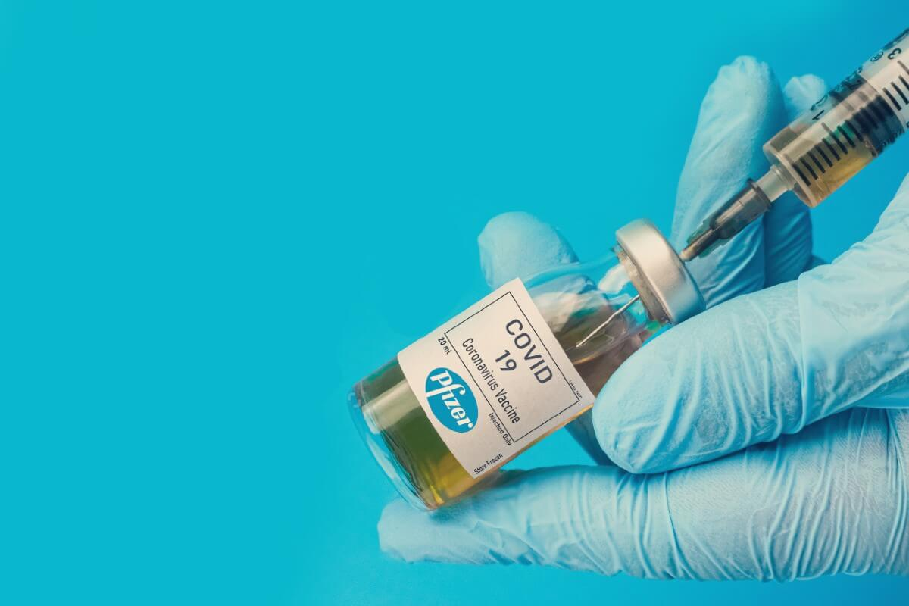
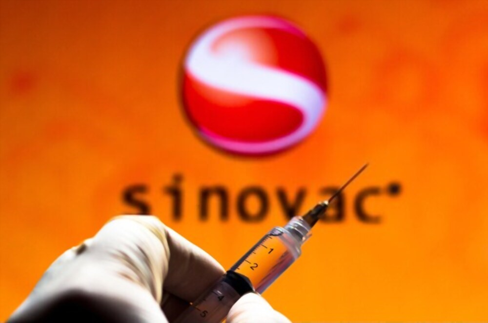
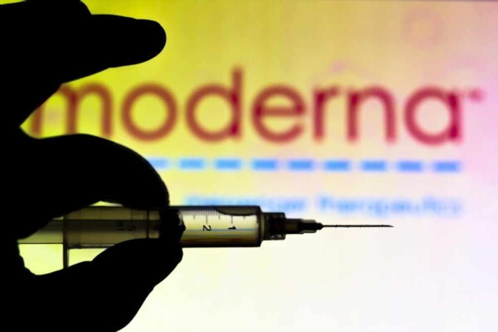
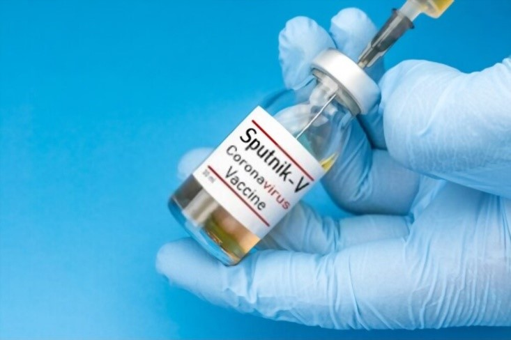
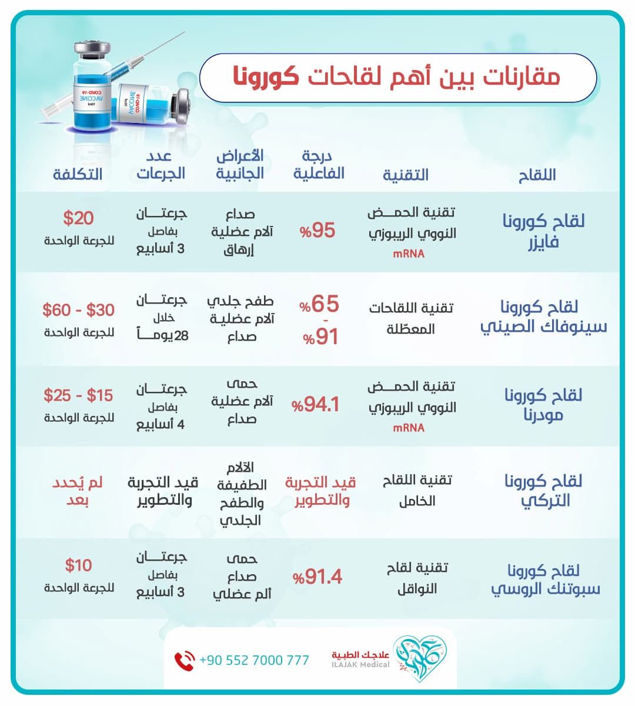

فيروس كورونا
بدأ فيروس كورونا بالإنتشار مع نهاية عام 2019 يعتبر فيروس كورونا سريع الإنتشار وينتقل عبر التلامس او الرذاذ الناتج عن السعال

مقارنة بين كل الشركات التي أنتجت لقاحاً لفيروس كورونا
في هذا المقال نقارن بين جميع أنوع لقاحات ضد فيروس كورونا، من حيث التقنية، والأعراض الجانبية، ودرجة الفاعلية لكل لقاح.
جدول المحتويات
- لقاح لتقوية المناعة ضد فيروس كورونا
- أيهما أفضل لقاح كورونا أم المناعة الطبيعية؟
- أشهر الشركات التي أوجدت لقاحاً لفيروس كورونا
- لقاح كورونا فايزر - بيونتيك
- لقاح كورونا سينوفاك الصيني
- لقاح مودرنا ضد فيروس كورونا
- لقاح كورونا التركي
- لقاح كورونا الروسي
- لقاح كورونا - نوفافاكس
- تقنية لقاح كورونا نوفافاكس
- درجة فعالية لقاح كورونا نوفافاكس
- الأعراض الجانبية للقاح كورونا نوفافاكس
- عدد الجرعات لقاح كورونا نوفافاكس
- تكلفة لقاح كورونا نوفافاكس
- لقاح أكسفورد – أسترازينيكا
- تقنية لقاح كورونا أسترازينيكا
- درجة فعالية لقاح كورونا أسترازينيكا
- الأعراض الجانبية للقاح كورونا أسترازينيكا
- عدد جرعات لقاح كورونا أسترازينيكا
- تكلفة لقاح كورونا أسترازينيكا
- لقاح كورونا جونسون
- حالات تحسس من لقاح كورونا
- أضرار لقاح كورونا
- ماهي السلالة الجديدة لفيروس كورونا؟
لقاح لتقوية المناعة ضد فيروس كورونا
تعمل اللقاحات عموماً مِن خلالِ تدريبِ دفاعاتِ الجسمِ الطبيعية - جهاز المناعة - وإعدادها للتعرف على الفيروسات والبكتيريا التي تستهدفها ومكافحتها؛ مما يجعل الجسمَ حالَ تَعرُّضِه لهذه الجراثيم مستعدًا على الفور لتدميرها والوقاية من المرض.
وكذلك الحال مع لقاح كورونا، فهو لقاح يهدف إلى توفير المناعة ضد فيروس كورونا.
أيهما أفضل لقاح كورونا أم المناعة الطبيعية؟
على الرغم من أن العدوى الطبيعية تسبب مناعة أفضل من اللقاحات عادة، إلا أن المناعة الطبيعية من المرض تحدث بعد جرعة أو عدوى واحدة، بينما المناعة من اللقاحات لا تحدث إلا بعد عدة جرعات.
تتلخص الاختلافات بين مناعة اللقاح والمناعة الطبيعية في الجرعة ووقت التعرض للمسبب:
- الجرعة: عندما يتعرض شخصٌ ما للفيروسات أو البكتيريا بشكل طبيعي، فغالبًا ما تكون الجرعة أكبر، وبالتالي فإن الاستجابة المناعية التي تتطور ستكون عادةً أكبر، وكذلك الأعراض، إضافة إلى أنه عندما يتم إنتاج اللقاحات، فإنها تنتج بكميات أصغر من الفيروسات أو البكتيريا اللازمة لتوليد استجابة مناعية وقائية.
- وقت التعرض: في معظم الأوقات، لا نعرف متى نتعرض للفيروسات والبكتيريا بشكل طبيعي؛ أما عندما نأخذ أطفالنا إلى الطبيب للحصول على لقاح، فإننا نعرف وقت التعرض بالضبط.
خلاصة القول: يقول الخبراء في هذا المجال إن لقاحات كورونا حالت دون الإصابة بأعراض المرض الخطيرة وتداعياته، وهو ما يجعلها أكثر أمانًا.
أشهر الشركات التي أوجدت لقاحاً لفيروس كورونا

لقاح كورونا فايزر - بيونتيك
تقنية لقاح كورونا فايزر
تعمل تقنية الحمض النووي الريبوزي (mRNA) من خلال تحفيز الشفرة الجينية لخلايانا لإنتاج البروتينات الفيروسية، فبمجرد إنتاج البروتينات التي لا تسبب المرض، يُطلق الجسمُ استجابةً مناعيةً ضد الفيروس، مما يمكّن الشخصَ من تطوير مناعته، على خلاف التقنية السائدة للقاح، إذ يعلّمون خلايانا كيفيةَ صنعِ بروتين - أو حتى قطعة من البروتين - لِيُطلقَ استجابةً مناعيةً داخل أجسامنا، وهذه الاستجابة المناعية التي تنتج أجسامًا مضادة، هي التي تحمينا من الإصابة بالعدوى إذا دخل الفيروس الحقيقي أجسامنا.
درجة الفعالية لقاح كورونا فايزر
95%
الأعراض الجانبية لقاح كورونا فايزر
إرهاق، صداع، قشعريرة، آلام عضلية، ولا سيما بعد الجرعة الثانية.
عدد الجرعات لقاح كورونا فايزر
جرعتان، بفاصل ثلاثة أسابيع
تكلفة لقاح كورونا فايزر
$20 للجرعة الواحدة.

لقاح كورونا سينوفاك الصيني
تقنية لقاح سينوفاك الصيني
يعمل اللقاح بالتقنية الاعتيادية للقاحات، عن طريق استخدام جزيئات فيروسية ميتة لتعريض جهاز المناعة في الجسم للفيروس دون المخاطرة برد فعل خطير للمرض.
درجة الفعالية لقاح سينوفاك الصيني
تجارب في تركيا وإندونيسيا أظهرت فعالية احتوى عليها لقاح سينوفاك تراوحت بين 65 و91 في المئة.
الأعراض الجانبية للقاح سينوفاك الصيني
ألم في موقع الحقنة، طفح جلدي، صداع، آلام في العضلات.
عدد جرعات لقاح سينوفاك الصيني
جرعتان خلال 14-28 يومًا.
تكلفة لقاح سينوفاك الصيني
30$ - 60$ للجرعة الواحدة.

لقاح مودرنا ضد فيروس كورونا
تقنية لقاح مودرنا
تقنية الحمض النووي الريبوزي، وهي نفس التقنية المستخدمة من قبل لقاح فيزر.
درجة الفعالية للقاح مودرنا
94.1%
الأعراض الجانبية للقاح مودرنا
حمى، آلام في العضلات، صداع يستمر لبضعة أيام، كما أن الآثار أكبر بعد الجرعة الثانية.
عدد جرعات لقاح مودرنا
جرعتان، بفاصل أربعة أسابيع
التكلفة للقاح مودرنا
$15–25 للجرعة الواحدة.
لقاح كورونا التركي
تقنية اللقاح التركي
"إي آر يو كوف فاك" ERUCOV-VAC،- يعتمد على تكنولوجيا اللقاح الخامل (Inactivated vaccine)، التي تقضي بمعالجة العوامل المعدية من فيروس كورونا المستجد كيميائياً، أو عبر الحرارة؛ لإفقادها خطورتها، لكن مع الحفاظ على قدرتها في إنتاج رد مناعي.
درجة الفعالية للقاح التركي
لا معلومات دقيقة حتى الآن، لأنه ما زال قيد التطوير.
الأعراض الجانبية للقاح التركي
ما زال اللقاح في مراحله التجريبية، ولم ينتج عنه آثار جانبية خطيرة، باستثناء أعراض الآلام الطفيفة والطفح الجلدي.
عدد جرعات اللقاح التركي
لا معلومات دقيقة حتى الآن، لأنه ما زال قيد التطوير.
تكلفة لقاح التركي
لا معلومات دقيقة حتى الآن، لأنه ما زال قيد التطوير.

لقاح كورونا الروسي
تقنية اللقاح الروسي
يعمل اللقاح الروسي - المعروف باسم سبوتنك 5 - بـتقنية "النواقل"، وهي مركبات يمكنها تحفيز مادة وراثية من فيروس آخر.
الناقل هو فيروس مُعَدٌّ هندسيًا، يفتقر إلى جين للتكاثر، وبمجرد حقنه في جسم الإنسان، فمن المفترض أن يحفّز الناقلُ الذي يحتوي على جين الفيروس التاجي إنتاجَ بروتينات فيروس كورونا، دون إصابة الجسم فعليًا، وبالتالي بناء مناعة ضد الفيروس.
درجة فعالية اللقاح الروسي
91.4%
الأعراض الجانبية للقاح الروسي
حمى، صداع وألم عضلي، ويؤثر في نحو 15٪ من المتلقين.
عدد الجرعات للقاح الروسي
جرعتان بفاصل ثلاثة أسابيع.
التكلفة للقاح الروسي
10$ للجرعة الواحدة.
لقاح كورونا - نوفافاكس
شركة أمريكية قامت بإنتاج العديد من اللقاحات سابقاً.
تقنية لقاح كورونا نوفافاكس
هذه الطريقة مستخدمة في صنع لقاحات مشابهة مثل الإنفلونزا و لقاح فيروس الورم الحليمي البشري ، ويعتمد على إدخال جين معدل يحوي تعليمات صنع بروتين شوكي في فيروس عصوي ، ومن ثم إصابة خلايا حشرة العث فيه ، ومن ثم حصد تلك الأشواك بعد صنعها ، و في جزئيات نانوية ذات أساس من الصابونين تُجمع تلك الأشواك و التي تشبه ما يملكه فيروس كورونا على سطحه ، ومن ثم عند حقن اللقاح في عضلات الذراع تقوم هذه الجزيئات النانوية بتحفيز الجهاز المناعي على صنع الأضداد القادرة على صد فيروس كورونا في حال الإصابة به مستقبلاً.
درجة فعالية لقاح كورونا نوفافاكس
فعال بنسبة %89.3.
الأعراض الجانبية للقاح كورونا نوفافاكس
ألم موضعي غير مستمر أو ألم خفيف.
عدد الجرعات لقاح كورونا نوفافاكس
جرعتان بينهما 30 يوماً.
تكلفة لقاح كورونا نوفافاكس
16 دولار.
لقاح أكسفورد – أسترازينيكا
تم تطوير اللقاح عبر شراكة بين جامعة أكسفورد وشركة أسترازينيكا البريطانية السويدية للأدوية ، ومقرها في بريطانيا وهي نفس الشركة المصنعة للقاح إيبولا .
تقنية لقاح كورونا أسترازينيكا
صنع اللقاح عبر تقنية النواقل الفيروسية ، حيث يتم إستخدام فيروس يدعى ChAdOx1 ينتمي لمجموعة الفيروسات الغدية والذي يتسبب عادة في نزلات البرد لدى الشمبانزي ، ولكن تم إجراء هندسة جينية لهذا الفيروس لعدم التضاعف ، واضيف له جين يحوي معلومات جينية لبروتين شوكي على حمض DNA ثنائي السلسلة الخاص به، حين يتم إدخال هذا الفيروس للجسم يقوم بالإرتباط بالخلية البشرية ، و من ثم إدخال حمض DNA الخاص به لداخل نواة الخلية البشرية ، حيث يتم نسخ تعليمات البروتين الشوكي إلى mRNA المرسال ، الذي يغادر النواة ومن ثم يقوم بصنع البروتين الشوكي ، الذي يندمج لتشكيل أشواك شبيهة بأشواك سطح فيروس كورونا ، وتنتقل هذه الأشواك أو أجزائها إلى سطح الخلية ، مما يحفز الجهاز المناعي لدى الجسم ، ليقوم بإستجابات أقوى تجاه البروتين الشوكي لفيروس كورونا في حال الإصابة به.
درجة فعالية لقاح كورونا أسترازينيكا
يمنع الإصابة بنسبة %86.6 للذين أعمارهم 60 ومافوق.
الأعراض الجانبية للقاح كورونا أسترازينيكا
ألم موضعي وطفح جلدي عند 17% إلى 21% من الأشخاص ، تزول هذه الأعراض بعد يومين من الحقن ، تأثيرات جهازية قد تشمل الإرهاق والإسهال و التعب العضلي ، في حالات نادرة جداً الجلطات الدموية ،
عدد جرعات لقاح كورونا أسترازينيكا
جرعتين بينهما 28 يوم.
تكلفة لقاح كورونا أسترازينيكا
يتراوح بين 2 إلى 5 دولار.
لقاح كورونا جونسون
تم تصميمه عبر شركة جونسون أند جونسون الأمريكية المساهمة الدولية.
تقنية لقاح كورونا جونسون
تم تطوير اللقاح عبر تقنية النواقل الفيروسية ، وذلك بإستخدام فيروس ينتمي لمجموعة الفيروسات الغدية يدعى النوع 26 ، والذي يسبب بالعادة نزلات البرد للبشر وليس الشمبانزي ، وهذا مايجعله مختلفاً عن لقاح أسترازينيكا ، حيث تم التعديل عليه لمنع تضاعفه واضافة التعليمات الجينية لصنع بروتين شوكي على DNA الخاص به ، وبعد الدخول للخلية البشرية يتم صنع هذه البروتينات ، وتتجمع لتشكيل أشواك تهاجر لسطح الخلية ، وهذه الأشواك ستحفز الجهاز المناعي على تشكيل أَضداد ، مما يسرع التعرف بسرعة على البروتين الشوكي الخاص بفيروس كورونا عند الإصابة.
درجة فعالية لقاح كورونا جونسون
%76.7
الأعراض الجانبية للقاح كورونا جونسون
قد يحدث ألم ، تورم موضعي ، احمرار وفي حالات نادرة جداً قد تحدث تجلطات دموية.
عدد جرعات لقاح كورونا جونسون
جرعة واحدة.
تكلفة لقاح كورونا جونسون
16 دولار.
حالات تحسس من لقاح كورونا
ذكر علم مركز السيطرة على الأمراض تقارير تفيد بأن بعض الأشخاص قد عانوا من تفاعلات حساسية شديدة - تُعرف أيضًا باسم التأق - بعد الحصول على لقاح كورونا.
يُعَدُّ ردُّ الفعل التحسسي شديدًا عندما يحتاج الشخص إلى العلاج بالإبينفرين، أو إلى الذهاب للمستشفى.
أضرار لقاح كورونا
قد تختلف الآثار الجانبية حسب نوع لقاح كورونا، وحسب الشخص، وقد ذكرنا في مقالنا بعض الآثار الجانبية لكل لقاح على حدة.
ولكن التأثير الجانبي الأكثر شيوعًا هو ألم في موقع الحقن، كما تشمل الآثار الجانبية الأخرى التعب، والصداع، وآلام العضلات، والقشعريرة، وآلام المفاصل، وربما بعض الحمى.
ماهي السلالة الجديدة لفيروس كورونا؟
قالت ماريا فان كيركوف، المسؤولة الفنية في منظمة الصحة العالمية، إن النوع الجديد من فيروس Covid-19 نشأ في جنوب شرق إنجلترا، وتم التعرف عليه في الدنمارك وهولندا وأستراليا.
كما أنه لا وجود لدليل واضح على قدرته على الانتقال بسهولة أكبر، أو أنه يسبب أعراضًا أكثر خطورة، أو أن اللقاح لا يجدي معه.

أسئلة شائعة حول لقاح فيروس كورونا
الشائعات المنتشرة على نطاق واسع في وسائل التواصل الاجتماعي والمواقع، عن "تعديل وراثي" للبشر، غير صحيح علمياً.
لم تُسجِّل التجاربُ السريريةُ للُّقاحات مشاركاتِ الحوامل أو المرضعات، وسيستمر هذا إلى أن يُثبِت اللقاحُ أنه ممكن التحمل بأمان عند غير الحوامل.
لا، على الإطلاق، إذ لا وجود لدليل واحد، على وفاة أحد المتطوعين المئة بعد تلقيهم لقاح COVID-19
لا تتنافس الدولُ في إنتاج لقاح كورونا لمواطنيها فحسب، بل تتنافس كذلك بتقديمه مجاناً لهم بعد شرائه، كما أن أغلب الشركات المصنعة للقاح تقدِّمه مقابل أجور رمزية.
لا، لن يكون إجبارياً على الجميع، لكنَّ أوَّلَ مَن يتلقى اللقاح هم العاملون في دور الرعاية، ولاسيما القائمون بأعمال التلقيح، ثم عموم الناس، مع بعض الاستثناءات، كصغار السن، والنساء الحوامل، أو من لديهم حالات صحية خطيرة.
نعم، فلا يوجد دليل على أن أيًا من هذه المكونات يسبب ضررًا.
المصادر والمراجع :
- https://www.novavax.com/our-unique-technology
- COVID-19 Vaccine AstraZeneca confirms 100% protection against severe disease, hospitalisation and death in the primary analysis of Phase III trials
- AstraZeneca vs. Sinovac Vaccines: Effectiveness, Side Effects (healthline.com)
- pdf (who.int)
- Is it true? Does the Oxford/AstraZeneca vaccine contain animal DNA? | Australian Government Department of Health
- https://www.pharmaceutical-technology.com/features/novavaxs-vaccine-covid19-results/
- https://www.news-medical.net/news/20210503/Researchers-demonstrate-real-world-effectiveness-of-Johnson-Johnson-COVID-19-vaccine.aspx
- WEBMD + BUSINESSINSIDER + SPUTNIKVACCINE + THEMOSCOWTIMES + ALJAZEERA + MEDSHADOW + REUTERS + DAILYSABAH + ALJAZEERA
اطلع على أحدث المنشورات والأخبار الطبية
عمليات شفط الدهون بالفيزر في تركيا والأسعار 2021
يعتبر شفط الدهون بالفيزر من أفضل عمليات علاج السمنة المفرطة. تعرف معنا على مميزات وعيوب شفط الدهون بالفيزر وكيف تتم العملية وشاهد الفرق قبل وبعد في تركيا.
طرق علاج طول النظر في تركيا وأحدث التقنيات
يعاني الكثير من كبار السن وحتى البالغين من مرض طول النظر . سنتحدث في هذا المقال عن كيفية علاج طول النظر وأسباب هذا المرض ونسبة نجاح العلاج .
الفرق بين زراعة الشعر في ايران وتركيا 2021
بالرغم من أن أسعار زراعة الشعر بين تركيا وايران لا تختلف كثيرا إلا أن هنالك الكثير من الفروق التي قد تحدد لك الدولة الأفضل لزراعة الشعر فيها.
طرق علاج قصر النظر في تركيا وأحدث التقنيات
يعاني الكثير من الأطفال وحتى البالغين من مرض قصر النظر. سنتعرف في هذا المقال على أفضل طرق علاج قصر النظر وأسباب هذا المرض ونسبة نجاح العلاج .